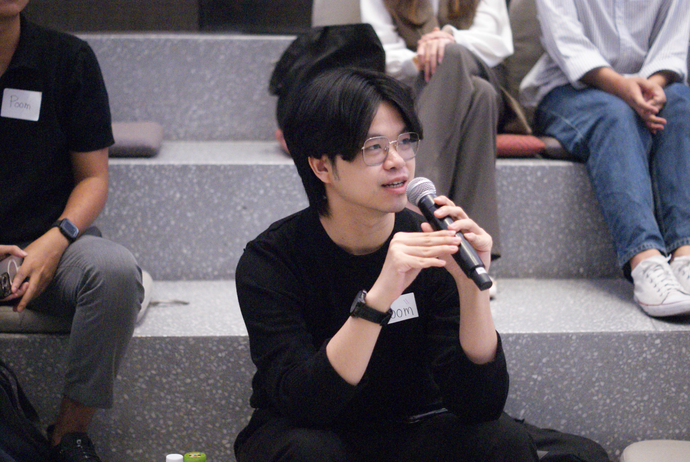
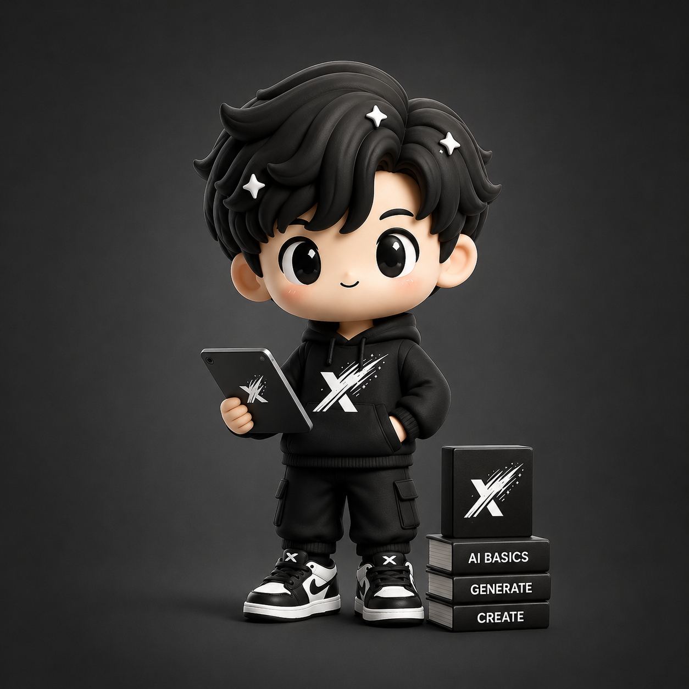

01
Founder & Director, LumoriX
สร้างบริษัทด้าน energy และ digital solutions ตั้งแต่ strategy, product development, go-to-market, operation และ partnership เพื่อแปลงเทคโนโลยีให้เป็นคุณค่าทางธุรกิจ
ประวัติผู้สอน AiX
ผู้สอนของ AiX Club ผ่านทั้งการสร้าง startup, พัฒนาแพลตฟอร์ม, วิเคราะห์ข้อมูล และทำงานกับทีมธุรกิจจริง จึงออกแบบการเรียน AI ให้เข้าใจง่าย ใช้ได้ทันที และต่อยอดเป็นระบบการทำงานของทีมได้

Instructor Profile
Natthaphon Chopchit เป็นผู้ประกอบการสายเทคโนโลยีที่ทำงานข้ามทั้งฝั่ง business, product, backend development, data analysis และการนำเสนอเชิงกลยุทธ์ ประสบการณ์เหล่านี้ทำให้การสอนของ AiX ไม่หยุดอยู่ที่การใช้เครื่องมือ แต่พาผู้เรียนเห็นวิธีออกแบบระบบงานที่ทีมใช้ซ้ำได้จริง
แนวทางการสอนจึงเน้นการแปลโจทย์ธุรกิจให้เป็น workflow, prompt, template และ assistant ที่จับต้องได้ เหมาะกับทีมที่ต้องการเริ่มใช้ AI อย่างมีทิศทาง ไม่ต้องเริ่มจากพื้นฐานเทคนิคที่ซับซ้อน
ประสบการณ์ที่นำมาใช้ในห้องเรียน
ผู้เรียนจะได้เห็นวิธีคิดตั้งแต่การเลือกงานที่ควรใช้ AI การออกแบบ workflow การตรวจคุณภาพคำตอบ ไปจนถึงการวางระบบให้ทีมใช้ซ้ำได้ โดยอิงจากประสบการณ์ด้านธุรกิจ ผลิตภัณฑ์ เทคโนโลยี และข้อมูล
สร้างบริษัทด้าน energy และ digital solutions ตั้งแต่ strategy, product development, go-to-market, operation และ partnership เพื่อแปลงเทคโนโลยีให้เป็นคุณค่าทางธุรกิจ
ดูแล real estate tokenization platform ตั้งแต่ MVP ถึง launch direction ทำงานร่วมกับทีม product, investor และ stakeholder พร้อมปรับ execution ให้ทีมเดินเร็วขึ้น
ใช้ data cleaning, KPI reporting และ Python automation เพื่อเพิ่มความชัดของข้อมูล ลดงาน manual และทำให้การตัดสินใจของทีมเป็นระบบมากขึ้น

AiX Learning Method
AiX Club ออกแบบการเรียนให้เหมาะกับคนทำธุรกิจที่ไม่มีพื้นฐาน IT มาก่อน เนื้อหาจึงเริ่มจากงานจริงของทีม แล้วค่อยพาไปเลือกเครื่องมือ เขียน prompt สร้าง template และวางระบบใช้งานที่ทีมปรับต่อได้เอง
เข้าใจว่า AI เหมาะกับงานแบบไหน งานไหนควรเริ่มก่อน และงานไหนยังไม่ควรใช้
ฝึกสร้างคำสั่งและผลลัพธ์ที่ใช้ได้จริง ทั้ง content, operation, research และ decision support
ต่อยอดจาก prompt ไปเป็น template, workflow, assistant และระบบทำงานซ้ำสำหรับทีม
นำไปใช้กับงานธุรกิจจริง พร้อมวิธีตรวจคุณภาพ ลดความเสี่ยง และวัดผลลัพธ์
ผลลัพธ์สำหรับผู้เรียน
จุดสำคัญของการเรียนไม่ใช่การจำชื่อเครื่องมือ แต่คือการทำให้ทีมรู้ว่าจะใช้ AI กับงานไหน ใช้อย่างไร และวัดผลอย่างไรให้เกิดประโยชน์กับธุรกิจ
เห็นภาพว่า AI จะช่วยลดต้นทุนเวลา เพิ่มความเร็ว และยกระดับการตัดสินใจในธุรกิจได้ตรงจุดใด
เปลี่ยนงานซ้ำ งานเอกสาร งานสรุป และงานประสานงานให้เป็น workflow ที่ทำซ้ำได้ง่ายขึ้น
ใช้ AI เพื่อช่วยคิด วางโครง สร้างชิ้นงาน ตรวจคุณภาพ และทำงานเร็วขึ้นโดยยังคุมมาตรฐานแบรนด์
เริ่มจากภาษาธุรกิจและตัวอย่างที่คุ้นเคย ก่อนต่อยอดไปสู่เครื่องมือและระบบที่ซับซ้อนขึ้น
เหมาะสำหรับธุรกิจที่ต้องการให้ทีมเริ่มใช้ AI อย่างจริงจัง เข้าใจง่าย และต่อยอดได้ โดยมีผู้สอนที่เข้าใจทั้งธุรกิจ เทคโนโลยี และการนำไปใช้ในงานประจำวัน